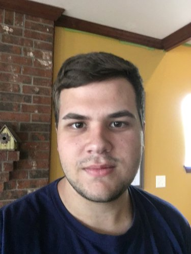

Bracken Sant
Summary
Hello, I'm Bracken Sant and I am a Sophomore at BYU-Idaho studying Data Science. Within the Data Science major, I am pursuing statistical analysis of data through programming with R and various libraries in Python, including, Pandas and Altair. I have been programming since high school in Java, Python, and C#, and have become proficient with the data structures within computer science, hierarchical structures, and working with APIs. Throughout my 6 years of programming, I have developed a love for problem solving, programming, and sifting through data. I have also developed a love for working hard on a project and have become addicted to the feeling of satisfaction after finishing a big project.
